SAP Integration
Write business object data back to SAP — first to SAP ECC (Business Partner), then to SAP S/4HANA (Sales Order) — covering Create, Update, and Delete operations.
What you'll cover
- Integration / write data back to SAP ECC
- Integrate / Write Data Back to SAP S4/HANA
Integration / write data back to SAP ECC
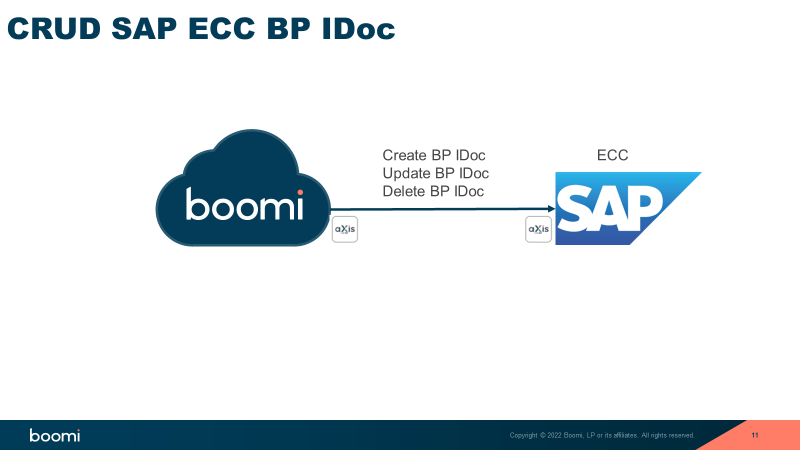
Create a Business Partner
Within your User - XX folder, create a new folder called 4.A - Build an integration with SAP ECC and click Save.

Within your 4.A - Build an integration with SAP ECC folder, create a New Component.

Name the component Create BP by IDoc and click the Create button.
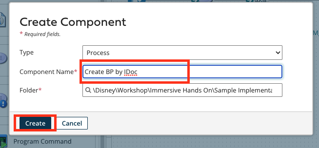
On the Start Shape, select Type : No Data and click OK.
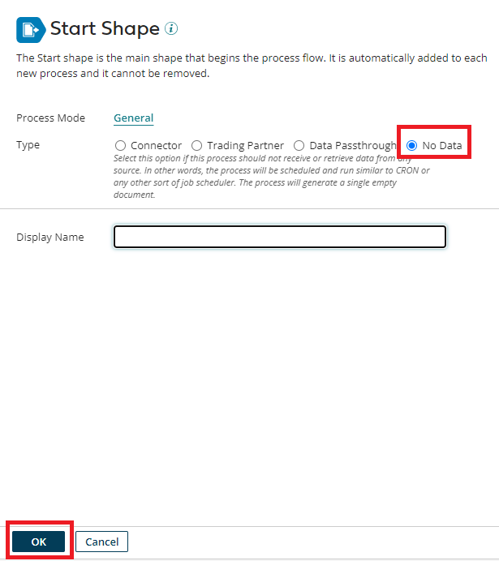
Drag a Message shape from the Execute panel of the shapes palette on the canvas. Copy and paste the data structure below into the Message section. Replace <your first name> with your first name and <your last name> with your last name or a fictitious one. Click OK.
FirstName,LastName
<your first name>,<your last name>
Drag and drop a Map shape onto the canvas. Click on the icon, navigate to /Workshop/Immersive Hands On/#Shared Assets and select Full Name FF to Create BP IDoc, and click OK.

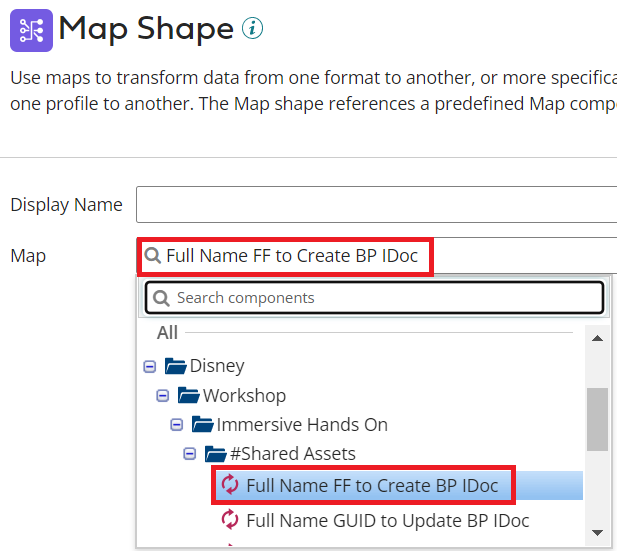
Search axis on Search shapes and drag the Boomi aXis for SAP connector shape to your Canvas

Configure Connector shape with below details
Action : IDOC_SEND
Connection: Select SAP ECC from directory:- /Workshop/Immersive Hands On/#Shared Connections
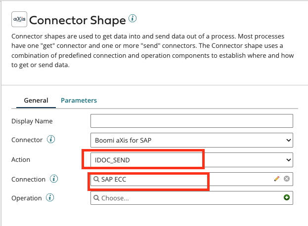
Click icon in the Operation field, rename the Operation to SAP BP Create IDoc and click on Import.

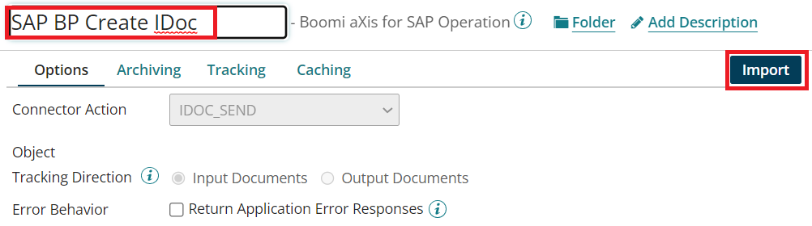
Select the workshop_demo in Atom; SAP ECC in Connection and
BUPAFS_FS_CREATE_FRM_DATA201 in Filter. Click Next.
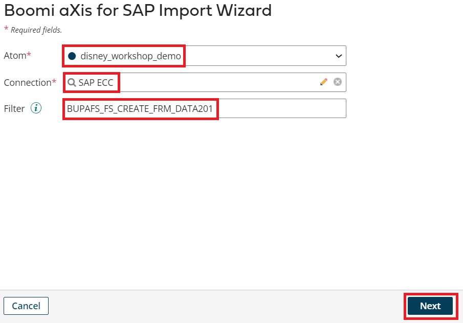
Select the Object BUPAFS_FS_CREATE_FRM_DATA201 and click Next, then Finish.
You will see the Request profile being created by the wizard once the import is complete. Click Save and Close then OK.
Drag a Stop shape on the process Canvas. Click OK. Connect all the shapes and rearrange them like the following.
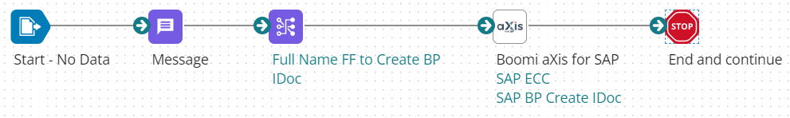
Now test the process by clicking on Test. Use the Atom workshop_demo and click Run Test.
If the process executes successfully, click on the Stop shape, click on Shape Source Data, click on the document icon and note the IDoc Number in the DOCNUM XML element. Give this number to your instructor to execute the IDoc so the BP gets created. You will need the BP Number and the BP GUID to run the next exercise.
Update a Business Partner
Within your 4.A - Build an integration with SAP ECC folder, create a New Component.

Name the component Update BP by IDoc and click the Create button.
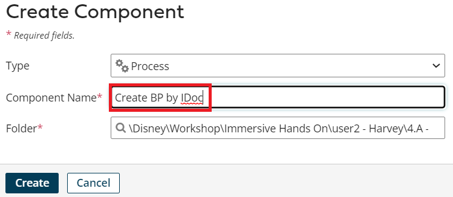
On the Start Shape, select Type : No Data and click OK.

Drag a Message shape from the Execute panel of the shapes palette on the canvas. Copy and paste the data structure below into the Message section. Replace <your first name> with what you used in the above exercise and <your last name> with what you used in the exercise above. Click OK.
FirstName,LastName,BP_GUID
<new first name>,<new last name>,<use same BP_GUID from from above>
Drag and drop a Map shape onto the canvas. Click on the icon, navigate to /Workshop/Immersive Hands On/#Shared Assets and select Full Name GUID to Update BP IDoc, and click OK.

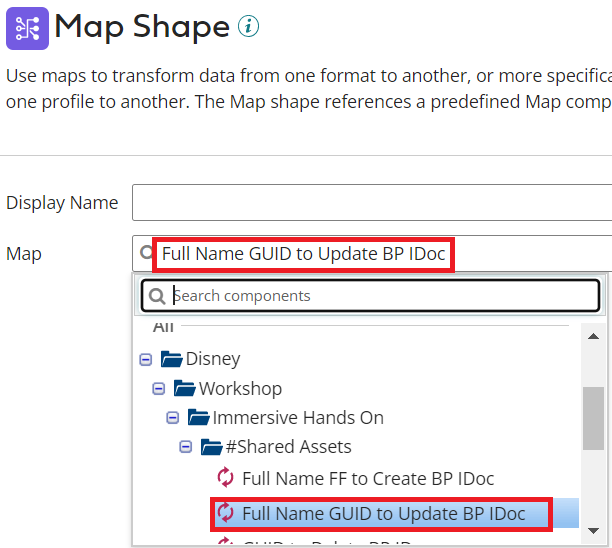
Search axis on Search shapes and drag the Boomi aXis for SAP connector shape to your Canvas

Configure Connector shape with below details
Action : IDOC_SEND
Connection: Select SAP ECC from directory:- /Workshop/Immersive Hands On/#Shared Connections

Click icon in the Operation field, rename the Operation to SAP BP Create IDoc and click on Import.

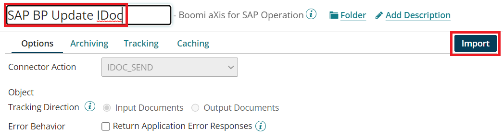
Select the workshop_demo in Atom; SAP ECC in Connection and
BUPA_INBOUND_MAIN_SAVE_M09 in Filter. Click Next.
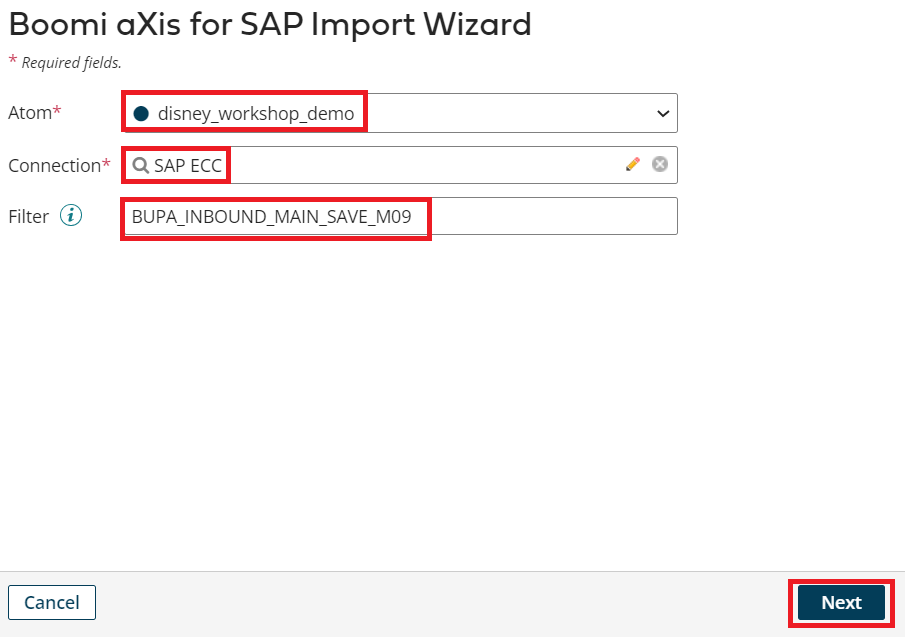
Select the Object BUPA_INBOUND_MAIN_SAVE_M09 and click Next, then Finish.
You will see the Request profile being created by the wizard once the import is complete. Click Save and Close then OK.
Drag a Stop shape on the process Canvas. Click OK. Connect all the shapes and rearrange them like the following.
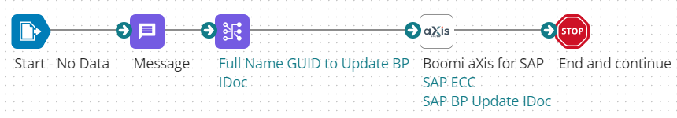
Now test the process by clicking on Test. Use the Atom workshop_demo and click Run Test.
If the process executes successfully, click on the Stop shape, click on Shape Source Data, click on the document icon and note the IDoc Number in the DOCNUM XML element. Give this number to your instructor to execute the IDoc so the BP gets updated. You will need the BP Number and the BP GUID to run the next exercise.
Delete a Business Partner
Within your 4.A - Build an integration with SAP ECC folder, create a New Component.
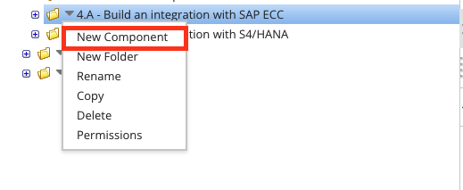
Name the component Delete BP by IDoc and click the Create button.
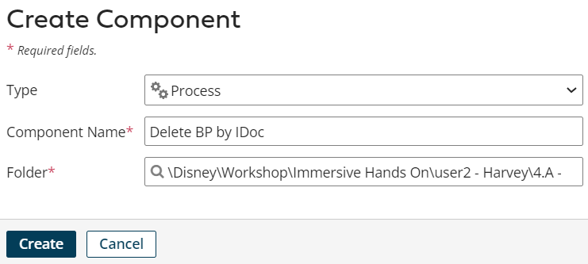
On the Start Shape, select Type : No Data and click OK.

Drag a Message shape from the Execute panel of the shapes palette on the canvas. Copy and paste the data structure below into the Message section. Replace <your first name> with what you used in the above exercise and <your last name> with what you used in the exercise above. Click OK.
FirstName,LastName,BP_GUID
<update first name>,<update last name>,<use same BP_GUID from above>
Drag and drop a Map shape onto the canvas. Click on the icon, navigate to /Workshop/Immersive Hands On/#Shared Assets and select GUID to Delete BP IDoc, and click OK.

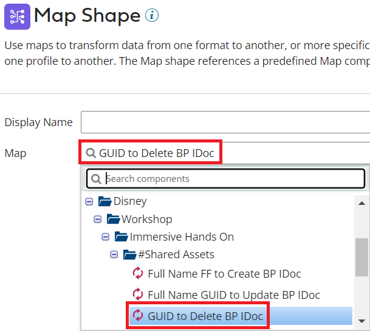
Search axis on Search shapes and drag the Boomi aXis for SAP connector shape to your Canvas

Configure Connector shape with below details
Action : IDOC_SEND
Connection: Select SAP ECC from directory:- /Workshop/Immersive Hands On/#Shared Connections

Click icon in the Operation field, rename the Operation to SAP BP Delete IDoc and click on Import.

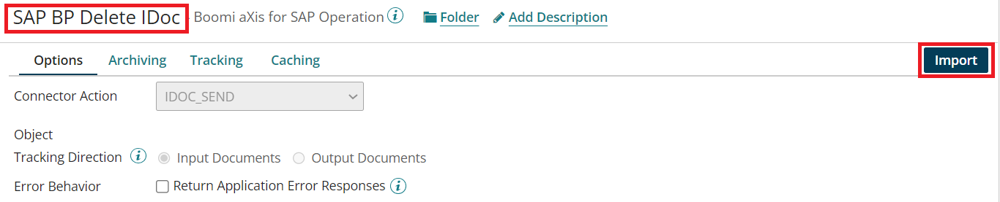
Select the workshop_demo in Atom; SAP ECC in Connection and
BUPA_INBOUND_MAIN_SAVE_M09 in Filter. Click Next.
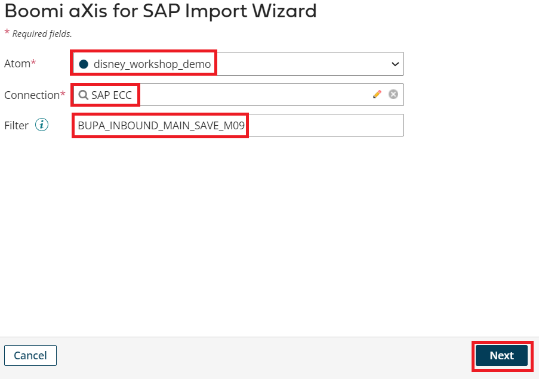
Select the Object BUPA_INBOUND_MAIN_SAVE_M09 and click Next, then Finish.
You will see the Request profile being created by the wizard once the import is complete. Click Save and Close then OK.
Drag a Stop shape on the process Canvas. Click OK. Connect all the shapes and rearrange them like the following.
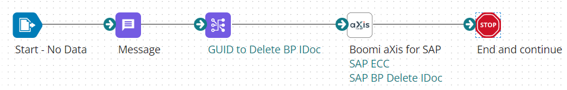
Now test the process by clicking on Test. Use the Atom workshop_demo and click Run Test.
If the process executes successfully, click on the Stop shape, click on Shape Source Data, click on the document icon and note the IDoc Number in the DOCNUM XML element. Give this number to your instructor to execute the IDoc so the BP gets flagged for archiving.
Integrate / Write Data Back to SAP S4/HANA
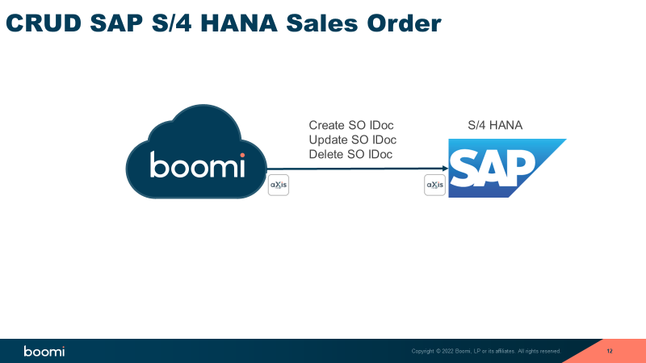
Create Sales Order
Within your User - XX folder, create another folder called 5.A - Integrate / write data back to SAP S4/HANA, and create a New Component.
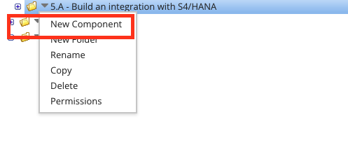
Name the component Create SO by FM and click the Create button.
On the Start Shape, select Type : No Data and click OK.

Select Salesforce connector and drag it to the canvas.
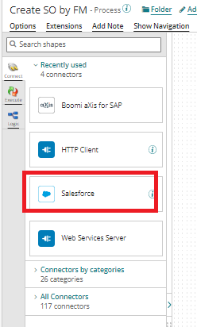
Select Action : Get and Connection : SE Shared SF from /Workshop/Immersive Hands On/#Shared Connections
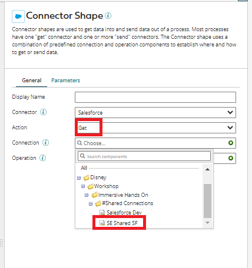
Click on icon in Operation and change name to Query Opportunity and click on Import.

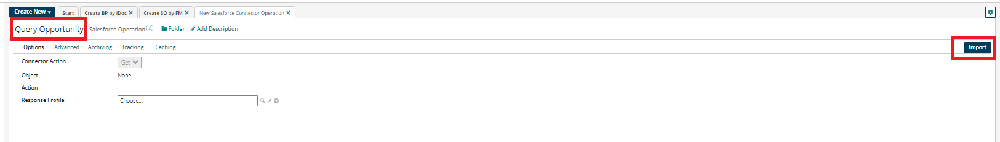
Choose Connection : SE Shared SF from /Workshop/Immersive Hands On/#Shared Connections by clicking on the magnifying glass and click on Next.
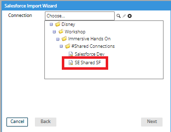
Select Object Type : Opportunity and Action : Query from respective dropdown menus and click on Next.
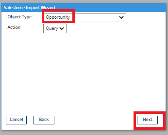
Expand Child Objects and check the box next to OpportunityLineItems. Expand OpportunityLineItems and check the box next to PricebookEntry. Scroll down and expand Parent Objects and also select Account. Boomi’s Salesforce connector can get data from all of these objects with just one call to the API. Click on Next then Finish.
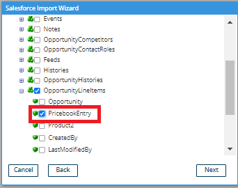
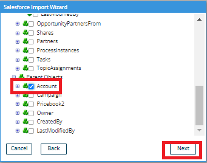
Now click on the Filters tab at the bottom of the Salesforce Operation and click on the black arrow icon to the left of Filter and select Add Logical Sub-Group.
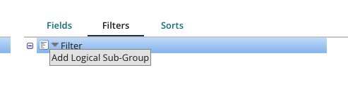
Now click on Add Expression, click on Expression, type Filter Name as ID= , select field Id from the profile drop down, then OK, select Operator as Equal To and click Save and Close.
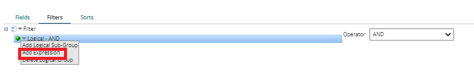
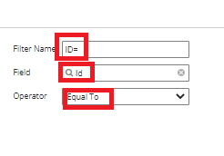
Click on Parameters and click on import all 1? link.
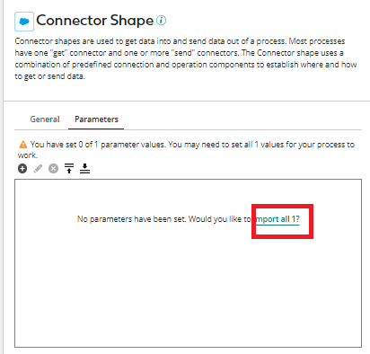
Double click the row that was added to open the Parameter Value dialog, set Static Value : 0065G00000pugzKQAQ. This is the Salesforce Opportunity ID of the object we will be sending to SAP. Click on OK, then OK to save the connector.
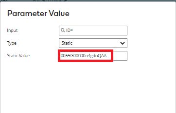
Connect start shape with Salesforce connector shape.
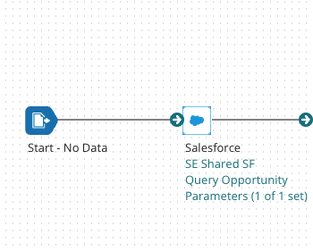
Search for Set Properties shape and drag one to the canvas.
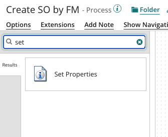
click on icon above the Properties to Set panel and select Property Type : Dynamic Process Property and Property Name : SAP_CustId_Trim click on OK.

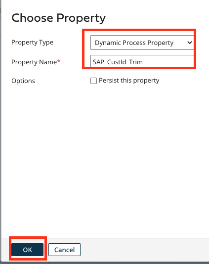
Click on the Dynamic Process Property - SAP_CustId_Trim in the Properties to Set panel, click on the icon over the Property Value panel, select Type : Profile Element, Profile Type : XML, click Choose… in the Profile field, navigate to and select SF_Opportunity_QUERY_Response from /Workshop/Immersive Hands On/<your folder>/5.A - Integrate / write data back to SAP S4/HANA folder, and select Element : external_ID__c (Opportunity/Account/external_ID__c) at the very bottom then OK.
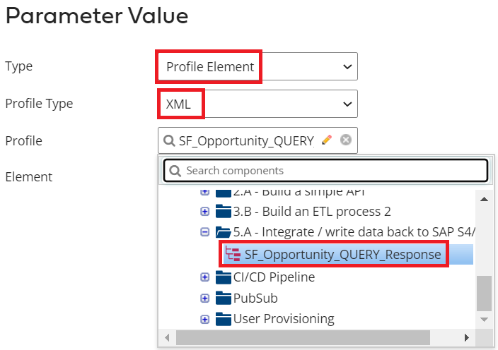
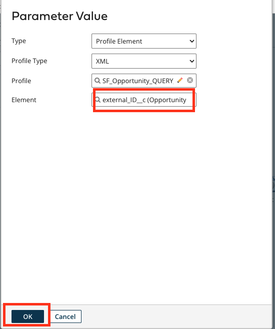
Repeat steps 16 - 17 to add another property called DPP_OPP_ID and Property Value will be Id (Opportunity/Id).
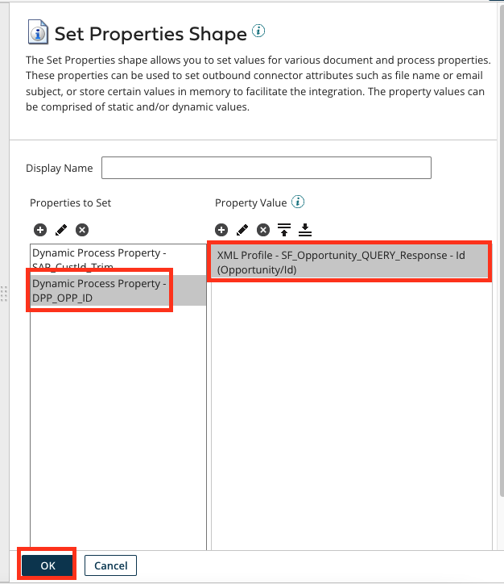
Click on OK, and connect the Salesforce connector to the Set Properties shape.
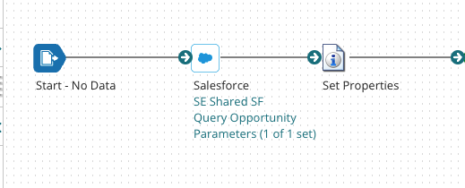
Drag a Map shape from Search shapes and choose SF Opp to SAP SO Map from /Workshop/Immersive Hands On/#Shared Assets, click on OK.
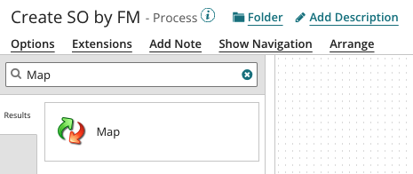
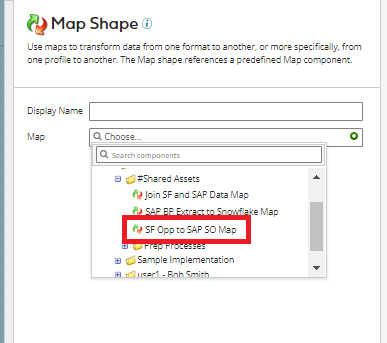
Connect the Set Properties shape to the Map shape.
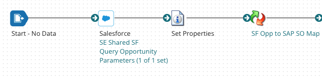
Search axis in Search shapes and drag the Boomi aXis for SAP connector shape to your canvas.

Configure Connector shape with details:
Action : FUNCTION
Connection : Select SAP S4H from folder:- /Workshop/Immersive Hands On/#Shared Connections
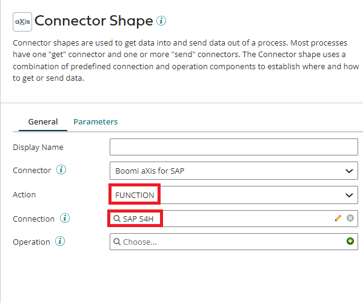
Click icon in the Operation field. Change the operation name to salesorder_create and click on Import.

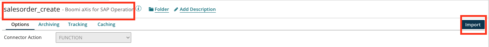
Select the workshop_demo in Atom; SAP S4H in Connection and
BAPI_SALESORDER_CREATEFROMDAT2 in Filter. Click Next.
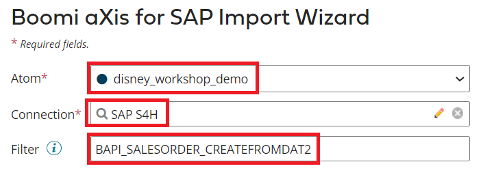
Select the Object Type : BAPI_SALESORDER_CREATEFROMDAT2 and click Next then Finish.
Now the Request and Response Profiles can be viewed on the Operation tab. Click on Save and Close.
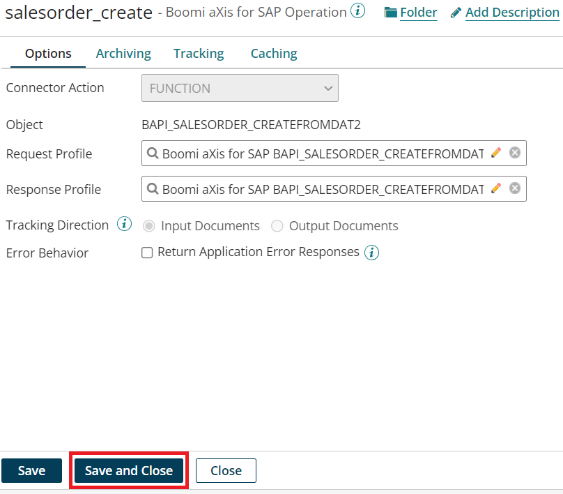
Click on OK and connect the Map shape to the Boomi aXis for SAP connection. Drag a Stop shape to the canvas, connect it to the Boomi aXis for SAP and click on Save. You process should look like this.
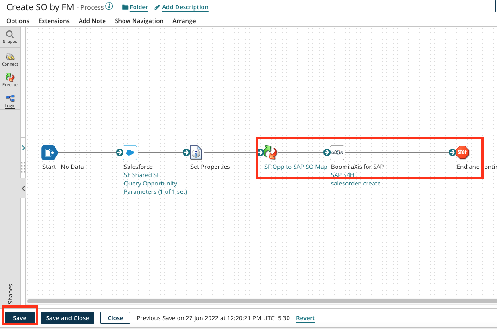
Now click on Test and select the workshop_demo Atom and click on Run Test.
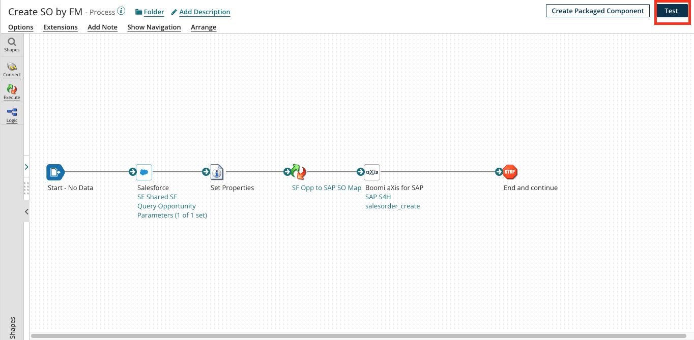

Once the process is executed ( green color on each shape), click on the Stop shape and click on the Shape Source Data to view the results.
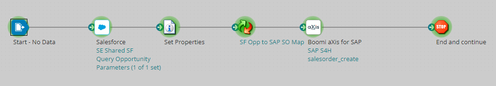
Make a note of the E_SALESDOCUMENT value, as you will need this value in the other exercises below. If you want to see the SAP Sales Order in the SAP GUI, ask your instructor to show you.
Update Sales Order
Within your 5.A - Integrate / write data back to SAP S4/HANA folder, create a New Component.
Name the component Update SO by FM and click the Create button.
On the Start shape, select Type : No Data and click OK.

Drag a Message shape from the component panel on the Boomi canvas. Copy and paste the below into the Message section. Replace the highlighted section with Sales Order Number received in Response from Create SAP Sales Order Call above. Click OK. Include the opening and closing single quotes.
'{
"I_~1IXBX~1FORCE_COMMIT_OR_ROLLBACK": "X",
"I_ORDER_HEADER_INX" : {
"UPDATEFLAG" : "U"
},
"I_SALESDOCUMENT" : "<Sales Order Number received in Response from Create Call>",
"T_ORDER_ITEM_IN" : [
{
"ITM_NUMBER" : "000001",
"TARGET_QTY" : 20.000
},
{
"ITM_NUMBER" : "000002",
"TARGET_QTY" : 10.000
}
],
"T_ORDER_ITEM_INX" : [
{
"ITM_NUMBER" : "000001",
"TARGET_QTY" : "X",
"UPDATEFLAG" : "U"
},
{
"ITM_NUMBER" : "000002",
"TARGET_QTY" : "X",
"UPDATEFLAG" : "U"
}
],
"T_SCHEDULE_LINES" : [
{
"ITM_NUMBER" : "000001",
"SCHED_LINE" : "0001",
"REQ_QTY" : 20.000
},
{
"ITM_NUMBER" : "000002",
"SCHED_LINE" : "0001",
"REQ_QTY" : 10.000
}
],
"T_SCHEDULE_LINESX" : [
{
"ITM_NUMBER" : "000001",
"SCHED_LINE" : "0001",
"REQ_QTY" : "X",
"UPDATEFLAG" : "U"
},
{
"ITM_NUMBER" : "000002",
"SCHED_LINE" : "0001",
"REQ_QTY" : "X",
"UPDATEFLAG" : "U"
}
]
}'
Connect the start shape to the Message shape.
Search axis on Search shapes and drag a Boomi aXis for SAP connector shape to your canvas
Configure Connector shape with details:
Action : FUNCTION
Connection : Select SAP S4H from directory:- /Workshop/Immersive Hands On/#Shared Connections

Click icon in Operation field. Change the name to Update SO and click on Import.

Select the workshop_demo in Atom; SAP S4H in Connection and BAPI_SALESORDER_CHANGE in Filter. Click Next.
Select the Object Type of BAPI_SALESORDER_CHANGE and click Next, then Finish.
You will see the Request and Response profile being created by the wizard once the import is complete. Click Save and Close, then OK.
Drag a Stop shape on the process Canvas. Click OK.
Connect all the steps together so that your canvas looks like the following. Click Save
Now click on Test and select the workshop_demo Atom and click on Run Test.

Once the process is executed ( green color on each shape), click on the Stop shape and click on the Shape Source Data to view the results.
You will see a complete view of the entire SAP Sales Order. If you want to see the SAP Sales Order that has been updated in the SAP GUI, ask your instructor to show you.
Delete Sales Order
Within your 5.A - Integrate / write data back to SAP S4/HANA folder, create a New Component.

Name the component Delete SO by FM and click the Create button.
On the Start shape, select Type : No Data and click OK.

Drag a Message shape from the component panel on the Boomi canvas. Copy and paste the below into the Message section. Replace the highlighted section with Sales Order Number received in Response from Create Call. Click OK.
'{
"I_~1IXBX~1FORCE_COMMIT_OR_ROLLBACK": "X",
"I_ORDER_HEADER_INX" : {
"UPDATEFLAG" : "D"
},
"I_SALESDOCUMENT" : "<Sales Order Number received in Response from Create Call>",
}'
Connect the start shape to the Message shape.
Search axis on Search shapes and drag a Boomi aXis for SAP connector shape to your canvas

Configure Connector shape with below details
Action : FUNCTION
Connection : Select SAP S4H from directory:- /Workshop/Immersive Hands On/#Shared Connections
Operation: Select Update SO operation created in step #11 in the previous exercise. It should be in this same folder.
Click OK.
Drag a Stop shape on the process canvas. Click OK.

Connect the shapes so they look like the following.

Click on Save.
Now click on Test and select the workshop_demo Atom and click on Run Test.
Once the process is executed ( green color on each shape), click on the Stop shape and click on the Shape Source Data to view the results.
You will see that the SAP Sales Order has been deleted. If you want to see that the SAP Sales Order has been deleted in the SAP GUI, ask your instructor to show you.